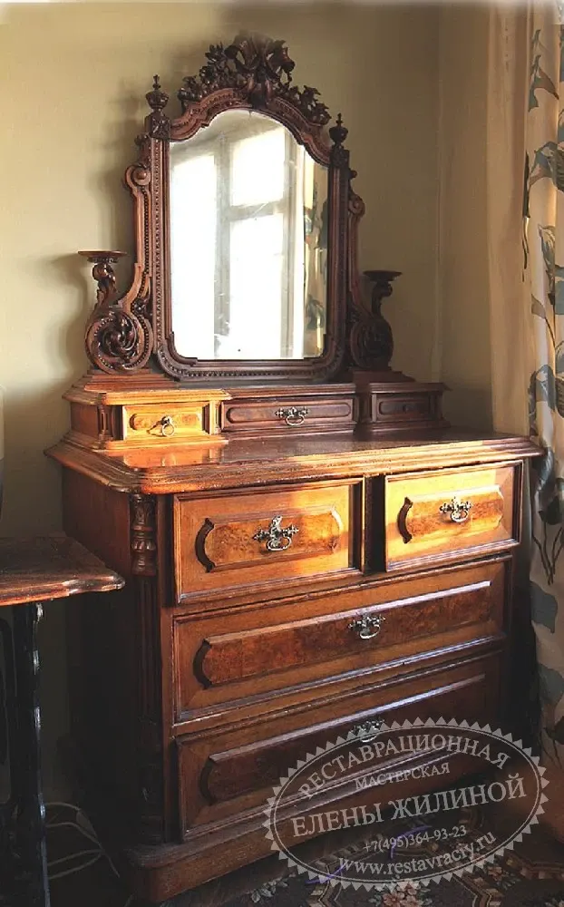
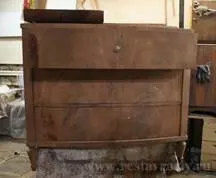
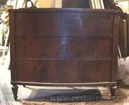
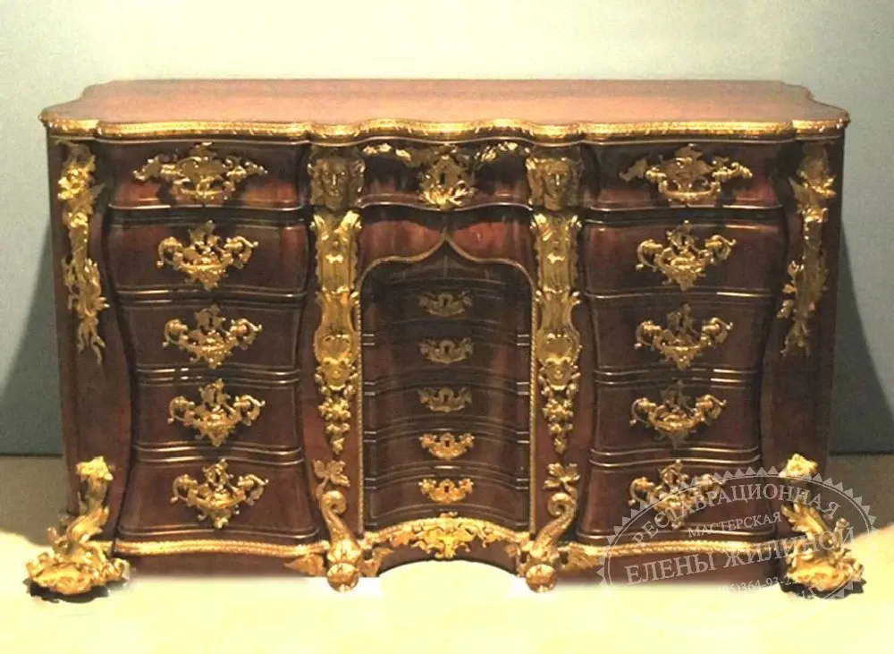
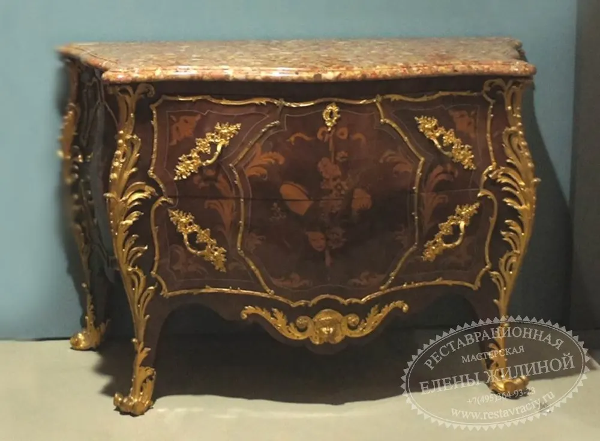
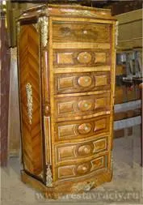
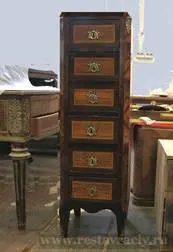
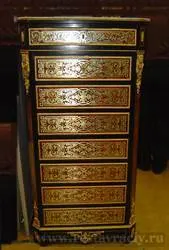
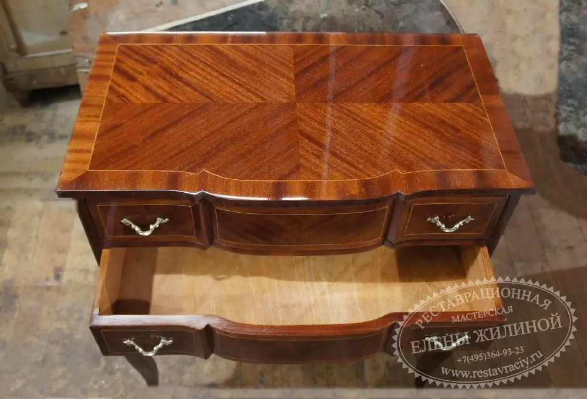

Мебель
Реставрация комода
В комоде важны геометрия корпуса, направляющие ящиков и состояние облицовки фасадов. Сохраняйте снятые ручки и ключи, их пригодность проверяют при осмотре.


Видеозаписи мастерской
О чём рассказывает мастерская
- Цена реставрации комода
- Видео реставрации комода (снято в нашей мастерской)
- Купить антикварный комод
- Комод из красного дерева
- Старый комод
В материале мастерской
Фотографии и детали

 Открыть снимок у мастерской
Открыть снимок у мастерской 


Открыть снимок у мастерской


Открыть снимок у мастерской


Открыть снимок у мастерской


Открыть снимок у мастерской


Открыть снимок у мастерской


Открыть снимок у мастерской


Открыть снимок у мастерской


Открыть снимок у мастерской
Посмотреть снимки с сайта мастерской 2
Оригинальные фотографии откроются здесь с сайта мастерской.
 Открыть снимок у мастерской
Открыть снимок у мастерской  Открыть снимок у мастерской
Открыть снимок у мастерской Есть похожая вещь?
Подберите ракурсы для предварительной оценки.